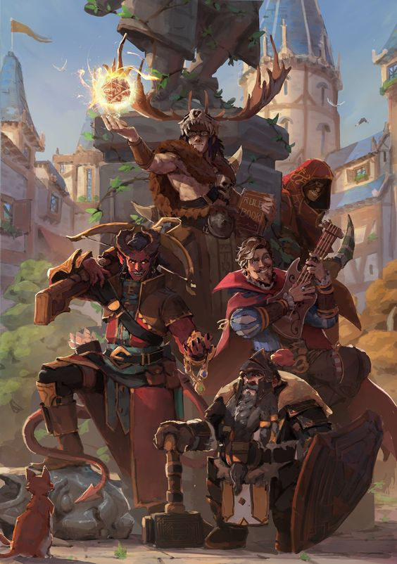
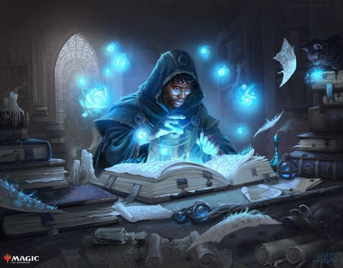
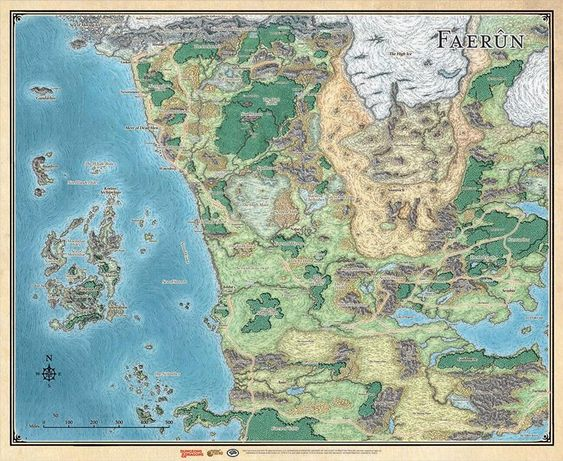
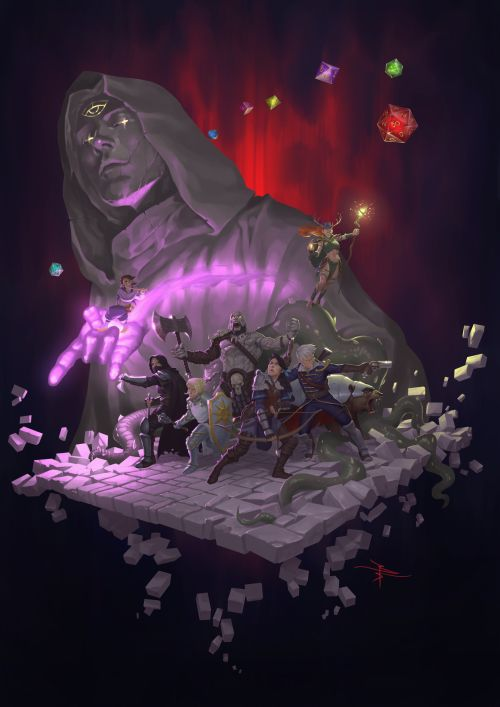

Aprenda a criar seus próprio personagem de D&D!
"Aprenda os Segredos da Criação: Domine a Arte de Criar Personagens Épicos em Dungeons & Dragons!"
Conheça o guia definitivo para criar personagens incríveis em Dungeons & Dragons! Aprenda passo a passo como desenvolver heróis únicos e envolventes, com habilidades extraordinárias e histórias cativantes. Desvende segredos de raças, classes e habilidades especiais para construir personagens inesquecíveis. Domine a arte da criação e mergulhe em aventuras épicas. Seja o herói que você sempre sonhou ser neste mundo de fantasia sem limites!
Saiba Mais! 20/07/2022Saiba as regras básicas do universo de D&D para se aventurar!

"Desbrave os Reinos de Dungeons & Dragons: Domine as Regras Básicas e Torne-se um Aventureiro Destemido!"
Aventure-se em um mundo de magia e perigos! Aprenda as regras básicas de D&D e embarque em uma jornada épica repleta de criaturas fantásticas e desafios emocionantes. Torne-se o herói de sua própria história neste universo fascinante de Dungeons & Dragons!
Saiba Mais! 04/02/2023Conheca a classe de prestigio: Arquimago.
"Desvende os Segredos da Magia Suprema: Tornando-se um Arquimago nas Terras de Dungeons & Dragons"
Grande notícia para os aventureiros de Dungeons & Dragons! Uma nova classe épica está prestes a desvendar seus poderes arcanos: o Arquimago. Domine os segredos místicos e se torne o senhor dos elementos. Lance feitiços avassaladores, manipule as forças cósmicas e torne-se uma lenda viva. Prepare-se para embarcar em uma jornada de magia e conquista como nunca antes vista! Descubra mais sobre essa empolgante adição ao mundo de D&D em nosso blog. Junte-se à revolução mágica como um verdadeiro Arquimago!
Saiba Mais! 01/09/2021Desvende os mistérios do Reino Perdido!
"Descubra os Segredos Ocultos do Reino Perdido: Aventura Épica Aguarda os Jogadores de Dungeons & Dragons!"
Prepare-se para embarcar em uma jornada inesquecível pelo Reino Perdido! A nova campanha de Dungeons & Dragons promete desvendar os mistérios mais profundos e emocionantes. Desbrave terras desconhecidas, enfrente criaturas temíveis e desvende segredos há muito tempo esquecidos. Com narrativas cativantes e desafios emocionantes, esta aventura épica promete testar suas habilidades estratégicas e sua criatividade. Reúna seu grupo de aventureiros e mergulhe em um mundo cheio de magia, perigos e descobertas surpreendentes. O Reino Perdido aguarda aqueles que ousam se aventurar além das fronteiras conhecidas. Você está pronto para essa jornada única?
Saiba Mais! 28/03/2018Guia para mestres iniciantes Dicas e truques para criar campanhas memoráveis em D&D.
"Desvende os segredos do mestre em criar campanhas inesquecíveis"
Ser um mestre de Dungeons & Dragons é uma tarefa desafiadora e recompensadora. No artigo de hoje, vamos mergulhar no fascinante mundo da criação de campanhas memoráveis. Descubra dicas e truques valiosos para construir narrativas envolventes, desafios emocionantes e personagens cativantes. Prepare-se para se tornar o arquiteto de aventuras épicas e encantar seus jogadores com experiências inesquecíveis. Aventure-se conosco nessa jornada e desvende os segredos do mestre em criar campanhas que ficarão marcadas na história de D&D.
Saiba Mais! 15/12/2021